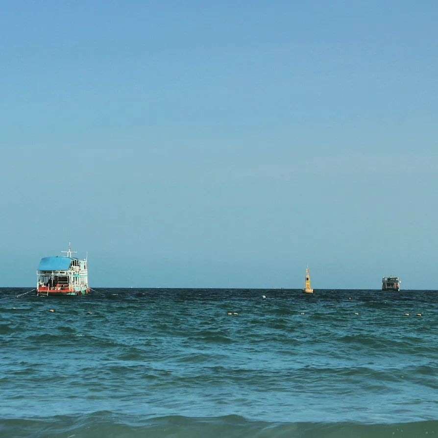

Life Memory

ภาพถ่าย : เรือประมง
ภาพนี้แสดงถึงวิถีชีวิตชาวประมงที่ต้องใช้เวลาส่วนใหญ่ไปกับการหาปลา เพื่อประทังชีวิต
และยังให้ความรู้สึกเวลามอง เป็นความรู้สึกเหมือนมีลมพัดเข้ามา และความสงสัยใคร่รู้
ว่ามีสิ่งใด ในทะเล
 Life Memory
Life Memory